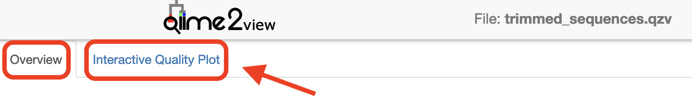
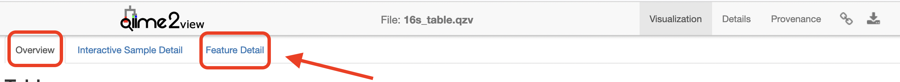

Importing, cleaning and quality control of the data
Last updated on 2026-04-20 | Edit this page
Overview
Questions
- How do you import demultiplexed paired‑end FASTQ files into a QIIME 2 artefact?
- Why must primers be removed prior to denoising?
- What diagnostics should you inspect before selecting DADA2 truncation parameters?
Objectives
- Import Casava‑formatted demultiplexed paired‑end reads into a single SampleData artefact.
- Remove primers with cutadapt while handling degenerate bases and quality trimming.
- Generate demux quality summaries and choose appropriate DADA2 truncation lengths to balance read quality and merge overlap.
Importing, cleaning and quality control of the data
Import data
These samples were sequenced on a single Illumina NextSeq run at the Walter and Eliza Hall Institute (WEHI), Melbourne, Australia. Data from WEHI came as paired-end, demultiplexed, unzipped *.fastq files with adapters still attached. Following the QIIME2 importing tutorial, this is the Casava One Eight format. The files have been renamed to satisfy the Casava format as SampleID_FWDXX-REVXX_L001_R[1 or 2]_001.fastq e.g. CTRLA_Fwd04-Rev25_L001_R1_001.fastq.gz. The files were then zipped (.gzip).
Here, the data files (two per sample i.e. forward and reverse reads
R1 and R2 respectively) will be imported and
exported as a single QIIME 2 artefact file. These samples are already
demultiplexed (i.e. sequences from each sample have been written to
separate files), so a metadata file is not initially required.
To check the input syntax for any QIIME2 command, enter the command,
followed by --help
e.g. qiime tools import --help
If you haven’t already done so, make sure you are running the workshop in byobu-screen and have created the symbolic links to the workshop data.
Start by making a new directory analysis to store all
the output files from this tutorial. In addition, we will create a
subdirectory called seqs to store the exported
sequences.
Run the command to import the raw data located in the directory
raw_data and export it to a single QIIME 2 artefact file,
combined.qza.
Remove primers
Remember to ask your sequencing facility if the raw data you get has the primers attached - they may have already been removed.
These sequences still have the primers attached and must be removed prior to denoising. For this workshop, primer trimming was performed using the QIIME 2 cutadapt trim-paired plugin to maintain a fully reproducible workflow within the QIIME 2 framework. Amplicons were generated using standard 16S rRNA gene primers for the v4 region, and the reads returned from the sequencer therefore include these primer sequences at the 5′ ends. Using cutadapt, the specified primer sequence and any bases upstream of the match are removed, with an error rate of 0.10 to balance sensitivity of primer detection with specificity of trimming. Degenerate bases in the primers are accommodated using wildcard matching, and any reads lacking the expected primer sequences are discarded to minimise inclusion of off-target amplification products. A modest 3′ quality trimming threshold (Phred score = 20) is also applied to remove low-quality bases prior to downstream denoising.
It is important to note that these data were generated on an Illumina NextSeq platform, which uses 2-colour chemistry and can produce artificial poly-G tails at the ends of reads under low-signal conditions. The QIIME 2 implementation of cutadapt does not have the –nextseq-trim parameter, which is specifically designed to remove these artefacts. As such, the trimming approach used here represents a simplified, self-contained workflow appropriate for teaching purposes. For production analyses of NextSeq data, best practice is to perform trimming with standalone cutadapt (including –nextseq-trim) prior to importing reads into QIIME 2, as this improves removal of sequencing artefacts and can enhance downstream denoising and taxonomic resolution.
BASH
qiime cutadapt trim-paired \
--i-demultiplexed-sequences analysis/seqs/combined.qza \
--p-front-f GTGYCAGCMGCCGCGGTAA \
--p-front-r GGACTACNVGGGTWTCTAAT \
--p-error-rate 0.10 \
--p-overlap 10 \
--p-match-adapter-wildcards \
--p-discard-untrimmed \
--p-quality-cutoff-3end 20 \
--p-quality-cutoff-5end 0 \
--p-cores 8 \
--output-dir analysis/seqs_trimmed \
--verboseThe primers specified are the Earth Microbiome Project (EMP) 16S V4 primers (515F (Parada)– 806R (Apprill) targeting the v4 region of the bacterial 16S rRNA gene), which correspond to this specific experiment. Unless you are using these exact primers for your experiment, you need to adapt the code accordingly.
The error rate, --p-error-rate, and overlap,
--p-overlap, parameters will likely need to be adjusted for
your own sample data to maximise the proportion of reads successfully
trimmed while avoiding nonspecific matches. Play around with these
values and see what happens.
Create and interpret sequence quality data
Create a viewable summary file so the data quality can be checked. Viewing the quality plots generated here helps determine settings for dada2, which we will run next.
Trimmed sequences are processed using the dada2 plugin within
QIIME2. dada2 denoises data by modelling and correcting Illumina
amplicon sequencing errors, and infers exact amplicon sequence variants
(ASVs), resolving differences of as little as a single nucleotide. Its
workflow includes filtering, dereplication, paired-end read merging, and
reference-free chimera detection, resulting in a feature (ASV)
table.
Truncation removes bases from the 3′ end of reads at the specified position. When choosing DADA2 truncation lengths, the first step is to inspect the forward and reverse quality plots you just created. In many modern Illumina datasets, especially after primer and basic quality trimming, these plots may appear relatively flat with consistently high quality across most of the read length. In these cases, there is no obvious “cut point” where quality sharply declines. Instead of looking for a specific quality threshold (for example, Q35), you should choose truncation lengths conservatively, trimming only the very ends of reads if needed while retaining as much high-quality sequence as possible without compromising read overlap.
For paired-end data, an additional and critical consideration is read overlap. After truncation, the forward and reverse reads must still overlap sufficiently to merge. While the absolute minimum overlap is ~12 bp, an overlap of ~50 bp is recommended to ensure robust merging and reduce the risk of losing reads during this step. As a result, truncation lengths are often chosen by balancing two factors: maintaining high-quality sequence and preserving enough overlap for successful merging.
TL;DR: when quality plots are essentially straight lines, truncation is less about identifying where quality drops and more about keeping as much usable sequence as possible while ensuring adequate overlap between reads.
Things to look for when choosing truncation lengths
- Do the forward and reverse quality profiles show a clear decline near the ends of the reads? If so, truncate before the low-quality tail.
- If the quality profiles remain high and relatively flat, avoid trimming too aggressively and retain as much high-quality sequence as possible.
- Will the chosen forward and reverse truncation lengths still leave enough overlap for paired-end merging? A minimum overlap of ~50 bp is recommended.
Create a subdirectory in analysis called
visualisations to store all files that we will visualise in
one place.
BASH
qiime demux summarize \
--i-data analysis/seqs_trimmed/trimmed_sequences.qza \
--o-visualization analysis/visualisations/trimmed_sequences.qzvVisualisations: Read quality and demux output
Copy analysis/visualisations/trimmed_sequences.qzv to
your local computer and view in QIIME
2 View (q2view).
Click
to view the trimmed_sequences.qzv file in
QIIME 2 View.
Make sure to switch between the “Overview” and “Interactive Quality Plot” tabs in the top left hand corner. Click and drag on the plot to zoom in. Double click to zoom back out to full size. Hover over a box to see the parametric seven-number summary of the quality scores at the corresponding position.

Denoising the data
This step may take a long time to run (i.e. hours), depending on file sizes and available computational power.
Remember to adjust --p-trunc-len-f and
--p-trunc-len-r according to your own data.
In the following command, a pooling method of ‘pseudo’ is selected. Pseudo-pooling improves sensitivity to shared low-abundance ASVs across samples while remaining computationally efficient. This is better than the default of ‘independent’ (where samples are denoised independently) when you expect samples in the run to have similar ASVs overall.
Workshop participants only
Due to computational limitations in a workshop setting, this command will be run staggered (by co-ordinating with other users on the Nectar Instance you are logged in to), with no more than two users per Instance running the command at the same time.
The specified output directory must not pre-exist.
BASH
qiime dada2 denoise-paired \
--i-demultiplexed-seqs analysis/seqs_trimmed/trimmed_sequences.qza \
--p-trunc-len-f xxx \
--p-trunc-len-r xxx \
--p-n-threads 0 \
--p-pooling-method 'pseudo' \
--output-dir analysis/dada2out \
--verboseCalculating truncation lengths
The above code for you likely didn’t work if you didn’t adjust the
truncation length from xxx to an integer!
Overlap = (forward truncation length + reverse truncation length) − amplicon length.
For this amplicon, the expected length is ~255 bp. Try a few sensible truncation-length combinations and compare read retention and merging success.
Generate summary files
A metadata
file is required which provides the key to gaining biological
insight from your data. The file
Things to look for
How many features (ASVs) were generated? Does this seem reasonable for the sample type? High-diversity communities will usually yield more ASVs than low-diversity communities, but very large numbers can also reflect residual noise or non-target amplification.
Do the representative sequences make biological sense? Taxonomic assignments or BLAST hits should broadly match the expected environment or host (for example, marine, soil, gut, or terrestrial communities).
How many reads were retained after filtering, denoising, merging, and chimera removal? If a large proportion of reads were lost (for example, >50%), this may indicate that trimming or truncation settings were too stringent, read quality was poor, or overlap between forward and reverse reads was insufficient.
Did most samples retain enough reads for downstream analysis? Samples with very low final read counts may still be usable in some contexts, but they should be interpreted cautiously and may need to be excluded later.
BASH
qiime metadata tabulate \
--m-input-file analysis/dada2out/denoising_stats.qza \
--o-visualization analysis/visualisations/16s_denoising_stats.qzv \
--verboseVisualisation: Denoising Stats
Copy analysis/visualisations/16s_denoising_stats.qzv to
your local computer and view in QIIME 2 View (q2view).
BASH
qiime feature-table summarize \
--i-table analysis/dada2out/table.qza \
--m-metadata-file dunnart_metadata.tsv \
--output-dir analysis/visualisations/summary_table \
--verbose Visualisations: Feature/ASV summary
Copy analysis/visualisations/summary_table/summary.qzv
to your local computer and view in QIIME 2 View (q2view).
Click
to view the summary.qzv file in QIIME 2
View.
Make sure to switch between the “Overview” and “Feature Detail” tabs
in the top left hand corner.

BASH
qiime feature-table tabulate-seqs \
--i-data analysis/dada2out/representative_sequences.qza \
--o-visualization analysis/visualisations/16s_representative_seqs.qzv \
--verboseVisualisation: Representative Sequences
Copy analysis/visualisations/16s_representative_seqs.qzv
to your local computer and view in QIIME 2 View (q2view).
- Confirm input format (CasavaOneEightSingleLanePerSampleDirFmt) when importing.
- Primer removal is essential; untrimmed primers can disrupt denoising and downstream inference.
- Inspect interactive quality plots and consider read overlap (~50 bp recommended) when setting truncation lengths for paired‑end merging.
- Use dada2 denoise‑paired with appropriate pooling (here ‘pseudo’) and monitor read retention in denoising_stats outputs.